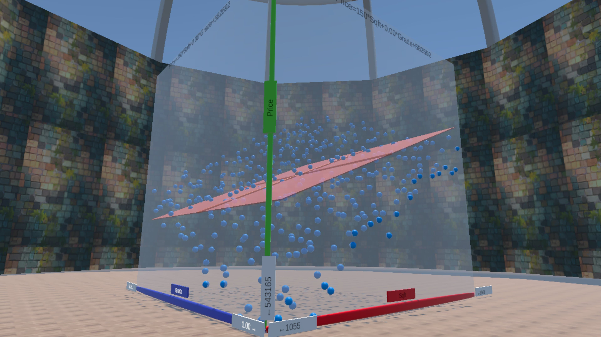

Code
Correlation between Sqft and Cond = 0.0005919001Review
Combine two Simple Equations (one predictor) into one multivariate OLS regression (only possible if predictors are uncorrelated)
See what happens if two Simple Equations (one predictor) are combined into one multivariate OLS regression, when predictors are perfectly correlated
Use Virtual Reality to perform the same tasks named in the learning outcomes above with 3D-diagrams
Frisch-Waugh-Lovell (FWL) Theorem in a Nutshell:
When the predictor variables in an OLS regression are not correlated, we can run \(j\) (e.g., two) Simple Regressions (regressions with only one predictor variable) and use the resulting \(\beta\)-coefficients for a joint multivariate regression.
Example: (\(Sft\) and \(Cond\) are not correlated:)
\[\widehat{Price}_i= \beta_{Sqft} \cdot Sqft_i + \beta_{01}\] \[\widehat{Price}_i= \beta_{Cond} \cdot Cond_i + \beta_{02}\] \[\widehat{Price}_i= \beta_{Sqft} \cdot Sqft_i+\beta_{Cond} \cdot Cond_i + \beta_0\] The resulting \(\beta_0\) can be calculated based on the average of Price, Square Feet, and Condition,
\(\overline{Price}\), \(\overline{Sqft}\) and \(\overline{Cond}\), respectively.
\[\beta_0=\overline{Price}-\beta_{Sqft} \cdot \overline{Sqft} - \beta_{Cond} \overline{Cond}\]
We have a dataset for house prices (\(Price_i\)) together with predictor variables for the houses’ condition (\(Cond_i\); 1 – 20) and their square footage (\(Sqft_i\)).
\(Cond_i\) and \(Sqft_i\) are not correlated:
Correlation between Sqft and Cond = 0.0005919001This works for all OLS regressions:
A house with average properties should be predicted with an average price!
The mean square footage in the dataset is: 2050.394The mean house condition in the dataset is: 10.5The mean house price in the dataset is: 891158Price on Square Feet:
https://econ.lange-analytics.com/calcat/FrischWaughLovellRegr/SqftOnly
210
Price on Condition:
https://econ.lange-analytics.com/calcat/FrischWaughLovellRegr/CondOnly
15,000
From the visual Simple Regressions we got:
\(\beta_{Sqft}=210\) and \(\beta_{Cond}=15,000\)
From the multivariate regression we get:
Call:
lm(formula = Price ~ Sqft + Cond, data = DataHouseSqftCond)
Residuals:
Min 1Q Median 3Q Max
-59792 -24240 -393 22825 56474
Coefficients:
Estimate Std. Error t value Pr(>|t|)
(Intercept) 2.981e+05 5.918e+03 50.38 <2e-16 ***
Sqft 2.124e+02 2.493e+00 85.20 <2e-16 ***
Cond 1.501e+04 2.492e+02 60.23 <2e-16 ***
---
Signif. codes: 0 '***' 0.001 '**' 0.01 '*' 0.05 '.' 0.1 ' ' 1
Residual standard error: 28730 on 397 degrees of freedom
Multiple R-squared: 0.9648, Adjusted R-squared: 0.9647
F-statistic: 5446 on 2 and 397 DF, p-value: < 2.2e-16\[\widehat{Price}_i= 212 \cdot Sqft + 15,001 \cdot Cond_i + 298,100\]
We have another dataset for house prices (\(Price_i\)) together with predictor variables for the houses’ condition (\(Rooms_i\); 1 – 20) and square footage (\(Sqft_i\)).
\(Rooms_i\) and \(Sqft_i\) are correlated. Each room has always 400 Sqft:
\[Sqft_i=400\cdot Rooms + 0\]
Correlation between Sqft and Cond = 1Note, because of predictor correlation \(\neq\) 0. FWL Theorem is not applicable.
This works for all OLS regressions:
A house with average properties should be predicted with an average price!
The mean square footage in the new dataset is: 1800The mean number of rooms in the new dataset is: 4.5The mean house price in the dataset is: 657219.4Price on Square Feet:
https://econ.lange-analytics.com/calcat/FrischWaughLovellRegr/SqftOnly100Cor
200
Price on Rooms:
https://econ.lange-analytics.com/calcat/FrischWaughLovellRegr/RoomsOnly100Cor
78,000
From the visual Simple Regressions we got:
\(\beta_{Sqft}=200\) and \(\beta_{Rooms}=78000\)
From the multivariate regression we get:
Call:
lm(formula = Price ~ Sqft + Rooms, data = DataHouseSqftRooms100Cor)
Residuals:
Min 1Q Median 3Q Max
-46272 -16738 1369 14072 56728
Coefficients: (1 not defined because of singularities)
Estimate Std. Error t value Pr(>|t|)
(Intercept) 3.049e+05 7.088e+03 43.02 <2e-16 ***
Sqft 1.957e+02 3.509e+00 55.77 <2e-16 ***
Rooms NA NA NA NA
---
Signif. codes: 0 '***' 0.001 '**' 0.01 '*' 0.05 '.' 0.1 ' ' 1
Residual standard error: 25730 on 62 degrees of freedom
Multiple R-squared: 0.9805, Adjusted R-squared: 0.9801
F-statistic: 3111 on 1 and 62 DF, p-value: < 2.2e-16\[\widehat{Price}_i= 196 \cdot Sqft + NA \cdot Rooms_i + 304,917\]
From the visual Simple Regressions we got:
\(\beta_{Rooms}=78000\) and \(\beta_{Sqft}=200\)
From the multivariate regression we get:
Call:
lm(formula = Price ~ Rooms + Sqft, data = DataHouseSqftRooms100Cor)
Residuals:
Min 1Q Median 3Q Max
-46272 -16738 1369 14072 56728
Coefficients: (1 not defined because of singularities)
Estimate Std. Error t value Pr(>|t|)
(Intercept) 304917 7088 43.02 <2e-16 ***
Rooms 78289 1404 55.77 <2e-16 ***
Sqft NA NA NA NA
---
Signif. codes: 0 '***' 0.001 '**' 0.01 '*' 0.05 '.' 0.1 ' ' 1
Residual standard error: 25730 on 62 degrees of freedom
Multiple R-squared: 0.9805, Adjusted R-squared: 0.9801
F-statistic: 3111 on 1 and 62 DF, p-value: < 2.2e-16\[\widehat{Price}_i= NA \cdot Sqft + 78,289 \cdot Rooms_i + 304,917\]
